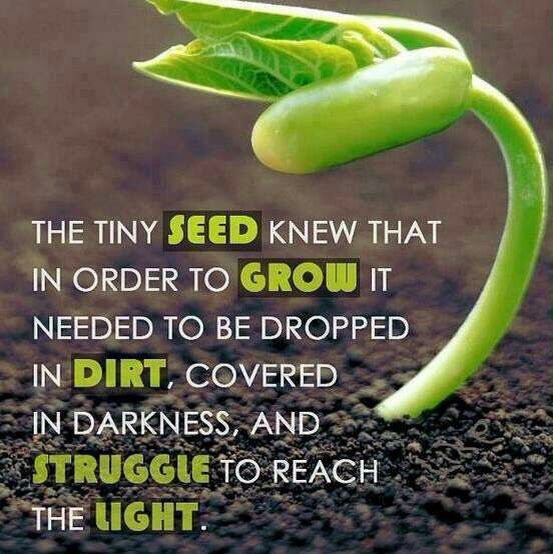

Về blog Water that seed
Xin chào và cảm ơn bạn đã ghé vào blog của mình, mình là Diễm Thúy (@tmeid).
Đây là blog mình viết về lập trình, chứ không phải về hạt giống và cách tưới cây đâu :>
Water that seed- Hãy tưới nước cho hạt giống đó. Hạt giống mà mình đang đề cập đến chính là niềm hứng thú, yêu thích của bạn dành cho lập trình. Đặc biệt đối với các bạn trái ngành, càng cần nhiều nỗ lực hơn nữa để nuôi dưỡng niềm hứng thú và say mê đó.
Vì cũng là một người trái ngành nên mình hiểu những khó khăn trong quá trình tự học lập trình: học ở ngọn không có gốc nên thấy nhọc nhằn và dễ dẫn đến nản muốn bỏ cuộc.
Mình lập trang này để tổng hợp và chia sẻ về các kiến thức nhập môn cơ bản. Hi vọng đây sẽ là nguồn tài liệu hữu ích để các bạn tham khảo.
Về mình
Như đã đề cập ở trên mình chỉ là một người trái ngành, có niềm yêu thích với lập trình muộn.
Mình thích lập trình vì mình thích Toán và mình ngưỡng mộ công việc của lập trình viên. Họ đã tạo nên rất nhiều điều tuyệt vời cho cuộc sống: thư tay + lập trình ta được Email, video + lập trình ta được Youtube, bản đồ + lập trình ta được bản đồ online, những trang web có tốc độ tải siêu nhanh, nhận diện bằng giọng nói, nhận diện bằng hình ảnh và vô vàn ứng dụng tuyệt vời khác... Mình mong một ngày nào đó mình sẽ tạo ra một ứng dụng hữu ích như vậy, hoặc được tham gia vào để viết một tính năng nhỏ trong ứng dụng đó cũng là điều khiến mình thấy hạnh phúc.
Mình xây dựng các bài viết dựa vào quá trình tự học (đọc sách, xem bài giảng online...), nên có nhiều phần có thể mình sẽ để trống một thời gian để tích lũy đủ kiến thức mới có thể viết tiếp. Hi vọng trong thời gian sớm nhất sắp tới, mình có thể quay lại giảng đường để theo học một chương trình đào tạo CNTT bài bản. Vừa giúp bản thân mình mở rộng kiến thức, đồng thời mình có thể viết nhiều bài viết hơn để chia sẻ với các bạn.
Hiện tại mình chưa xây dựng tính năng bình luận, mọi góp ý và phản hồi xin liên hệ tmeid@waterthatseed.com.